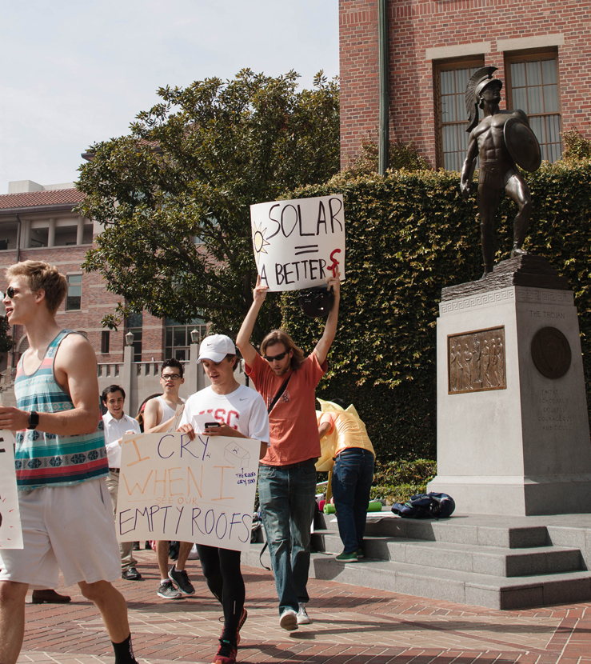

Members of the Environmental Core rally in 2016, asking the USC administration to place more emphasis on sustainability on campus. (Daily Trojan file photo)
For Milena Castillo-Grynberg, climate change isn't an abstract concept, but a real threat - one that USC has the power to combat.
As co-director of the Environmental Core, a group of students eager to turn concern about the environment into concrete policy changes on campus, Castillo-Grynberg has been pushing for increased sustainability on campus for years. This Friday, she'll take part in a rally to demand that the University do its part in curbing rising global temperatures that increase the risk of environmental disasters, and conserve valuable resources before they run out.
USC shares the same goals - at least on the surface-. In 2015, the University created its Sustainability 2020 Plan, a road map for how it wanted to become more environmentally responsible, outlined in seven major categories. Three years later, some goals have already been met, while the progress of others has been halted, and campus officials continue to monitor the latest developments.
But for student activists and others who have pushed for USC to reform its environmental policies, the plan was never enough to begin with. Instead, they're demanding that the University expand its vision to achieve net zero water use, waste and carbon emissions, as well as focus on sustainability education and research as well as full transparency on its environmental policies.
Students like Castillo-Grynberg, a junior majoring in environmental studies, see USC as a civic leader that could propel the entire city toward a more sustainable future, if it places a priority on doing so.
"We're always talking about how USC has so much influence [and is] such a huge player in Los Angeles," Castillo-Grynberg said. "If the city's regulations aren't meeting what the University wants, [USC] should be using its influence to push the city to pass policies that allow us to meet our goals."
The Sustainability 2020 Plan aims to improve the University's focus on sustainability in seven categories: education and research, engagement, energy conservation, transportation, procurement, waste diversion and water conservation. Each category has several goals which the University is meant to meet by the end of either the 2020 calendar year or the 2020 fiscal year, which ends in June 2021. Since the plan was approved by the President, the Provost and senior administration, the Office of Sustainability has sent out periodic updates on the progress of each goal.
According to Mark Ewalt, the executive director of administrative operations, 25 percent of a goal's progress is just developing a plan for achieving it; once funding is approved, that goal is 50 percent complete.
Currently, only the transportation category has achieved 100 percent of its goals: a reduction in single occupancy vehicles, measured using a self-reported survey. According to Ewalt, USC gets the information from a report the University is required to submit to the South Coast Air Quality Management District. The survey is sent to all staff and faculty and asks by what mode of transportation they used to get to work over the past week.
Ewalt said the University considers the transportation goal 100 percent complete because the number of people who reported using a single occupancy vehicle to get to campus fell from 56 percent in 2014 to 49 percent in 2018. USC also created a website that offers directions to places in L.A. using transportation methods other than SOVs, such as the LA Metro and Urb-E scooters.
"We didn't set a specific goal for that because we couldn't measure it as finitely as we wanted to and we weren't sure that we could even control it at all," Ewalt said. "We're still not sure we can control it."
The Office of Sustainability has placed a priority on the waste diversion category, with its goal of diverting 75 percent of the University's waste 56 percent complete as of August. To meet this benchmark, USC has begun installing recycling bins around campus and sorting its waste into recyclable and non-recyclable parts.
Other objectives, however, aren't as far along — its energy conservation goal is 47 percent complete and its water conservation goal is 33 percent complete. The goal of reducing water usage by 25 percent will most likely not be met by 2020, according to Ellen Dux, programs manager of the Office of Sustainability. The University was relying on the city to build a recycled water program called the "purple pipe," but it likely will not reach USC until at least 2024.
For student environmental leaders on campus, such as Environmental Student Assembly co-Director Olivia Pearson, the Sustainability 2020 Plan doesn't go nearly far enough. Pearson, a senior majoring in environmental engineering, sees it as a form of "greenwashing" — painting the University as environmentally sustainable on the surface, without making any truly meaningful changes.
"The goals that they say they're achieving are still a little vague and kind of just greenwashing the whole thing because they did not really outline very thorough metrics for what they were trying to meet," Pearson said.
Castillo-Grynberg agreed, saying that it should not be the students' responsibility to lead sustainability initiatives on campus.
"We're students and we have our classes and we have a lot of other things to worry about," Castillo-Grynberg said. "We just generally have been feeling like the University should be hiring professionals."
Castillo-Grynberg said it has been frustrating to not see enough changes on campus despite all the time and effort she has invested.
Pearson said the University is using excuses to "brush off the pressure" of becoming more sustainable. While she agreed that there are some things out of the University's control (such as the purple pipe program), she said that there are other things USC could already be doing to improve sustainability on campus, like removing single-use bags from restaurants on campus like Seeds.
Some groups at USC are already planning how it can move beyond its 2020 goals, as the Academic Senate proposed a Sustainability 2030 Plan that was approved by the Undergraduate Student Government and the Staff Assembly. Ewalt praised the Sustainability 2020 Plan for creating a framework for campus sustainability, which did not exist before 2015. However, he admitted that the blueprints for the 2030 plan seem like another "laundry list" of goals rather than a holistic look at the University's environmental policies.
"The next [plan] needs to be a lot more aggressive, it needs to be comprehensive and it needs to be something on the level of a city plan," Ewalt said. "It needs to be something where everything we're doing makes sense with the University environment, it takes very accurate assessment of what USC's capabilities, what its own aspirations are [and] what the condition of the physical planet is in."
Ewalt said a charter proposal has been submitted to the upper administration at USC to create the next sustainability plan. Once approved, Ewalt said creating the next plan will involve a representative from every group on campus, including students, faculty and staff.
"It's a really unique time at USC right now," Ewalt said. "Everybody's minds are open and possibilities are really out there. I think everybody's really open to having this dialogue in a way that we haven't been before."
Ewalt is pushing for a professional consulting firm to aid in the creation of the next sustainability plan.
Pearson said the next plan must have goals, but must also include a "game plan" to achieve those goals. A good plan, according to Pearson, would show that the University has been strategic and invested time and resources into sustainability.
"I think as long as we look within our own perspective and make goals that are ambitious for us," Pearson said. "I'm just asking for us to really push ourselves and not just do what L.A. is going to make us catch up to anyway - to show that we want to be a model for the community."